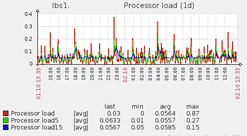
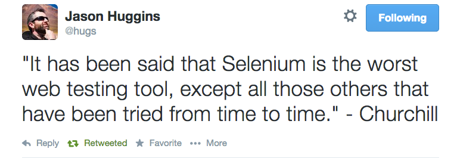

"Our highest priority is to satisfy the customer through early and continuous delivery of valuable software."


Source: http://paulhammant.com/2013/03/13/facebook-tbd-take-2/





"Infrastructure as code"

0 downtime
Blue/green





Avoid conflicts vs Resolve conflicts
Merge is the worst case (default in trunk based development)

When ?